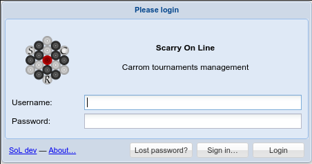

The authentication panel¶
Authentication¶
First of all, you must authenticate yourself.
Hey, what the heck… ⁉⁈
SoL is a client/server application, that is, there are two components. On one side there is
the client, an application running within any modern graphical web browser such as Firefox;
this application talks with a server, the other side, that effectively manages the database,
and implements the so called business logic.
The two components talk to each other thru a connection, that can be either a local one, where both side actually run on a single machine, as two different programs that run in parallel, or a network connection, where there are two (or more) computers involved, either on a LAN or even thru Internet.
This allows three scenarios:
the most simple one, a single standalone machine without any network capability, possibly with a printer: everything is done on this single station;
a set of computers connected thru a
LAN, one of which is the server, where one or more clients connect to it: imagine you are organizing the European Championship, and there are pressmen who'd like to see the ranking directly on their laptop, possibly using the local wireless network…the server is on the Internet, accessible from the outside: this may be just for showing your club's championship, or even to supply it as a on-line public service, where other people can organize their own.
So, back to the question: yes, it may be a little annoying to enter your credentials, but it's an honest price to pay for these capabilities.
Administrator and guest users¶
There are two special users, not registered in the Users management but are configured externally to the application, in a configuration file.
The most important one is the system administrator, allowed to do everything and in particular to assign and/or change the authentication password of the other users.
Hint
In a private instance of SoL, not accessible from the outside, the administrator
account may be used exclusively to insert and manage all the data, possibly assigning
a simple and mnemonic password.
On the other hand, for a public instance it is recommended to assign a non trivial password to this account and keep it secret, using such account only for administration purposes.
The other special user is the guest, introduced mainly for demonstration purposes: from the application point of view it is treated as any other ordinary user, but it cannot permanently save any of the changes it may apply.
Both accounts are managed in the configuration file of the application, in its [app:main]
section. For example:
sol.admin.user = admin
sol.admin.password = SomeGùdUndStrangePassword
#sol.guest.user = guest
#sol.guest.password = guest
that uses “admin” as the administrator username and assigns it a quite good password, while
disabling the guest user (the # character in the configuration file introduces a
comment, i.e. that character and the remaining part of the line are ignored).
Ownership¶
All top level entities, that is championships, clubs, players, ratings and tournaments, belong to either a particular user or to the administrator of the system: this means that the user is responsible for the entity, that may be modified or deleted only by him[*].
By default, new content is owned by the user that inserts it.
This is particularly handy on a public SoL instance, where more than one person may be allowed
to insert and manage Carrom tournaments, even at the same time, from different parts of the
world: while everybody may see each other changes, they cannot interfere in any way.
The responsibility on an entity may be reassigned at any time to a different user, either by the current owner or by the administrator. Of course this imply that the previous owner won't be able to change its content anymore.
Self registration¶
SoL allows the creation of a new account autonomously, without the intervention of an
existing user.
The registration process takes place in two phases:
clicking on the Register… button a form appears requesting an email address, a password and the names of the new user: when the form is submitted the system will send a message to the specified email address;
the message contains a link that must be visited within two days to complete the registration procedure and confirm the new account: in this way the system ascertains the validity of the given address.
Once the account has been confirmed, it will be possible to access the system using the email address as Username and the password as specified in the registration form.
Reset password¶
It may happen to forget the password and again the reset procedure happens in two phases:
clicking on the Lost password? button
SoLrequests the email address of the interested user: when the form is submitted the system will send a message to the specified email address;the message contains a link that must be visited within two days to complete the procedure by entering the new password for the account.
If instead you just want to change your own password, knowing the current one, use the Password… in the main menu of the application.